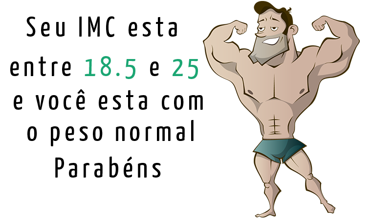

Saúde em números
Calcule seu IMC
Informe sua altura e seu peso para descobrir seu Índice de Massa Corporal e em qual faixa da OMS você se encaixa.
💡 Pode usar vírgula ou ponto. Se digitar a altura em centímetros (ex: 175), a conversão é feita automaticamente.

IMC é a sigla para Índice de Massa Corporal. Usando os parâmetros da Organização Mundial da Saúde, é possível saber se o seu peso está adequado para a sua altura.
Seu IMC é
0

Peso saudável para a sua altura
O IMC é uma referência geral para adultos e não substitui a avaliação de um profissional de saúde.